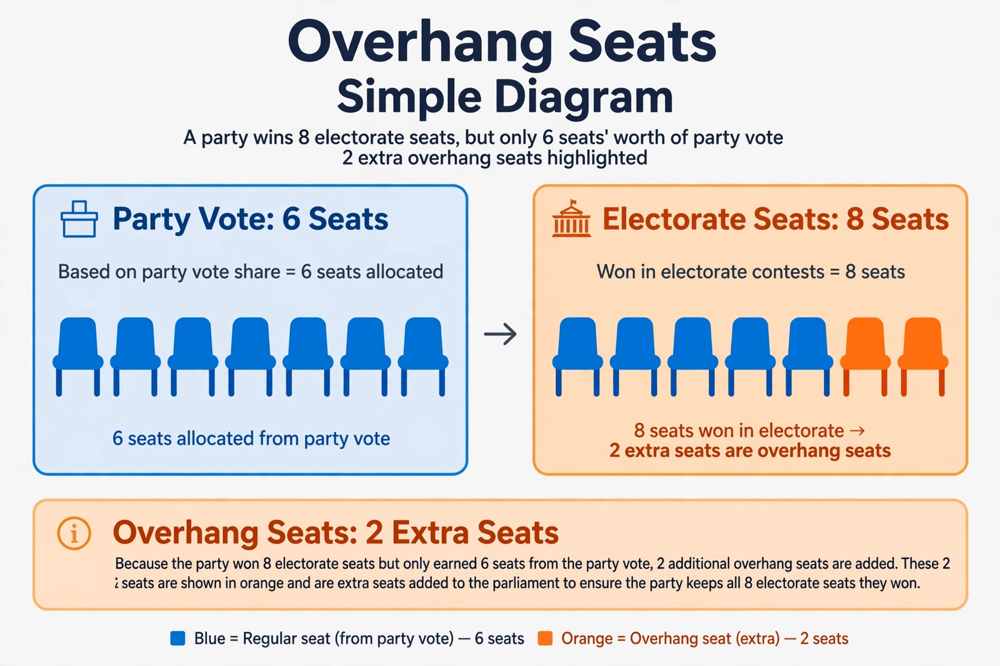

From Wikipedia, the free encyclopedia
An overhang seat (German: Überhangmandat) arises in mixed electoral systems when a political party wins more constituency (electorate) seats in a region than its share of the party (list) vote entitles it to in that region. Because the party's directly elected members cannot be removed, it keeps the extra seats, and the legislature expands beyond its nominal size for that term — unless the system creates compensatory "levelling" seats for other parties.
Overhangs are characteristic of mixed-member proportional systems such as those of Germany and New Zealand (see electoral system of New Zealand) and of additional-member systems more generally. In New Zealand, overhangs of one or two seats have occurred in several MMP elections, temporarily enlarging the 120-seat Parliament. A party benefiting from an overhang gains a slightly larger share of seats than its party vote strictly warrants.

In Germany, overhangs in the Länder were historically added to the Bundestag, enlarging it (the 2017 Bundestag had 709 members instead of the nominal 598). After constitutional court rulings on "negative vote weight", Germany introduced full levelling seats (Ausgleichsmandate) in 2013, compensating other parties so proportionality is restored — at the cost of an even larger chamber, which reached 736 members in 2021. A 2023 reform fixed the Bundestag at 630 seats and changed the treatment of constituency winners, largely eliminating overhang and levelling seats.
Categories: Electoral systems · Mixed electoral systems